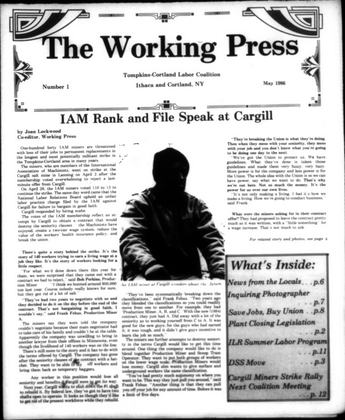

The run
Every issue digitised so far, in order. Click an issue to browse its pages.
Start here
A few stories worth opening first, with a note on why they matter.

Every issue digitised so far, in order. Click an issue to browse its pages.
A few stories worth opening first, with a note on why they matter.